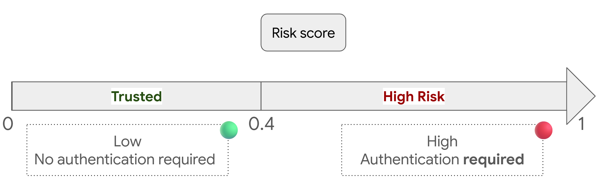
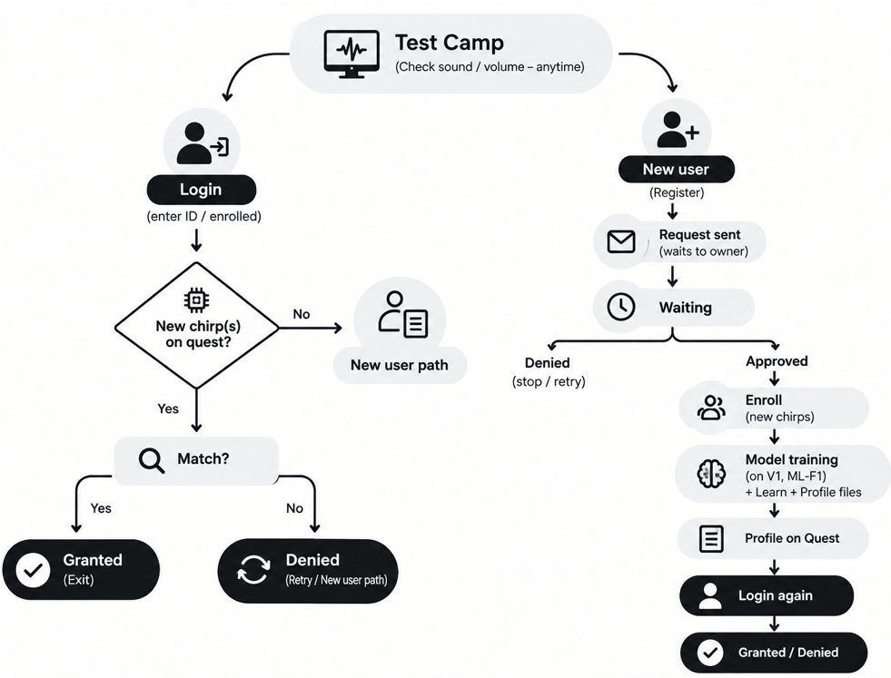
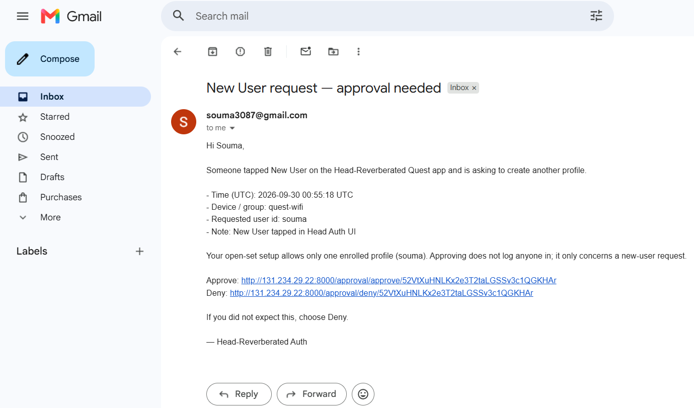
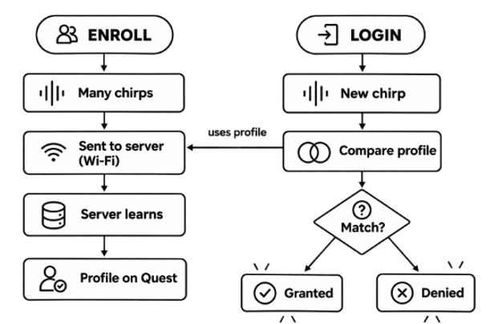
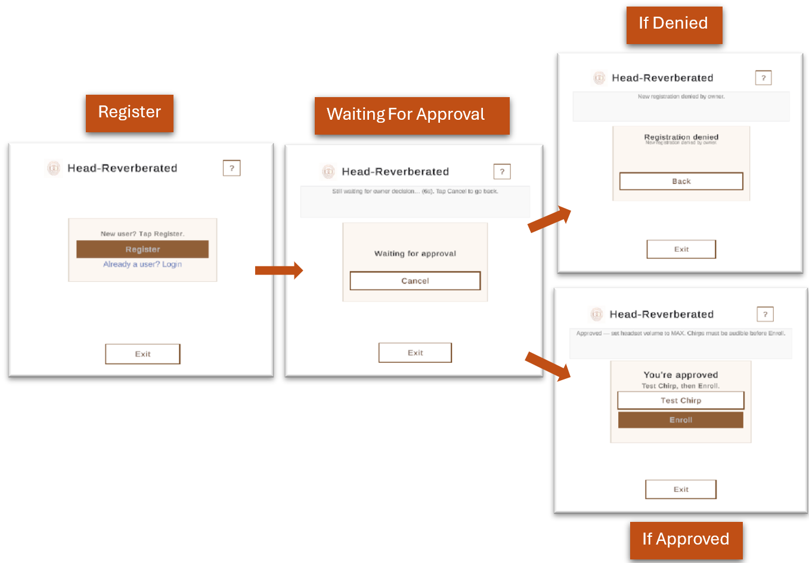

Paderborn University · IT Security 2025–2026
ADA-VR — Adaptive Authentication in Virtual Reality
Modular VR security framework + Quest sandbox prototype
ADA-VR is a modular framework for context-aware authentication in VR. It separates adaptation logic from sensors and authenticators, implements the MAPE-K loop, matches live context to scenarios with Gower distance, and ranks mechanisms using AURA-XR. A Unity sandbox on Meta Quest integrates one context sensor and three authenticators (Head Reverberated, QR Quest, Randomized PIN).
Head Reverberated (acoustic biometric)
Ultrasonic chirps (18–22 kHz) capture a head- and wear-specific echo inside the HMD; a remote
FastAPI training host fits per-user CAE + CNN models, then Quest caches .Sentis weights for
offline login. Registration uses multi-cycle enrollment (poses + chirps); authentication runs a short
3-chirp majority vote with pose and ambient checks.
- Head-locked HeadAuth popup integrated with ADA-VR registration vs authentication sessions
- Enroll → train on VM → download ONNX/Sentis → on-headset CNN + prototype scoring
- Quest 3 sandbox builds and course user-study sessions
Sandbox integration
Framework discovery registers sensors and authenticators at runtime; the managing system selects a mechanism for the current scenario. All three auth modalities run in one Quest build with Bluetooth/context monitoring.





Skills & technologies
- C# · Unity 6 · Meta Quest 3 · OpenXR · Meta XR Interaction SDK
- ADA-VR / MAPE-K · modular UPM packages · runtime registration
- VR UI: head-locked overlays, framework popup flows, Quest input
- Head Reverberated: ultrasonic capture, CAE/CNN, Unity Sentis, FastAPI integration
- Adaptive auth: AURA-XR, scenario matching, authenticator fallback
Summary and figures from the ADA-VR project group report (UPB, IT Security 2025–2026).